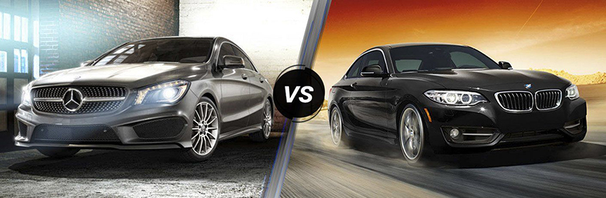

Bens vs BMW

My name is Vladyslav Zdir and I stand for BMW
Like an average guy I love angry cars with angry design. BMW is the brand combining this two aspects.
- In terms of interiors, for smaller models, Mercedes has superior interiors whereas, for larger cars, BMW wins over.
As practice shown bigger cats are more comfortable
- Performance wise a BMW may be better than a Mercedes and opinions could differ as per the model you drive.
- For road safety, most consumers rely on a BMW when they have an option.
My name is Ashwin Nandakumar and I stand for Mercedes
Benz is always Dream car for everyone. Be it the design or sleekness no car can outmatch Benz.
- Mercedes also has an important role in developing car safety.
- Features like airbag, ABS, collision protection, and seatbelt tensioning are among the first in Mercedes S-Class.
- It is one of the most important car manufacturers in automobile history.